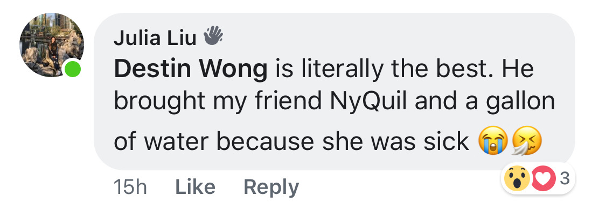

Chapter 4: That One Time I was Sick
So here we have another master procrastinator Ashley story: I think this was the same week that we had homework FaceTimed, and I had become really sick from the lack of sleep catching up to me, but unfortunately yo girl ✨procrastinated✨ ✨again✨ (ha do we really expect anything different at this point) and was grinding it out Sunday morning at Julia’s house.
She was having some personal issues with her fam, and I didn’t want to get caught in the middle of it, so naturally I texted you telling you about my situation while she was in her room dealing with it. I was completely fucked for my lab, I’m terrible at emotional support, and I was literally dying because my body hates me. But luckily I had you to encouraged me on the lab and gave me good advice on dealing with emotions. Probably the thing I most grateful for — you brought me Tylenol and whole ass gallon of water.

When you came, you comforted Julia and gave me my medicine. It was a short interaction in a pretty long day, but I knew I could count on you. Anytime I wasn’t taking care of myself (it’s literally just be being lazy most of the time too), you were the first one to offer me help. Anytime I was lonely, you were there to keep me company. And anytime I needed someone to talk to, you were there. (Wow I’m totally noticing this makes our relationship seem hella one sided but it’s just because I’m really needy) I think this is when I started noticing feelings for you, but as we know, what does Ashley do when she feels things? She 👏pushes 👏them 👏down.
← Chapter 3: Teeth Brushing at 3AM Chapter 5: ADD SOMETHING HERE →